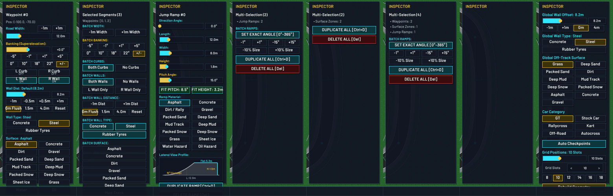

Track Studio inspector: layout mockups
Spec 086, checkpoint HC-1. These are drawings, not game code. Each card has the real size of the game inspector at 1280×720 (240 × 620 px), shown larger. The controls work: open the dropdowns, open and close sections, change tabs.
A, P1, W1:
Q1: layout
A or B. Q2: surface picker P1 or P2. Q3: mouse wheel W1 or W2.Today
The current inspector for 8 kinds of selection (Waypoint, 3 Waypoints, Jump Ramp, 2 Ramps, 2 Zones, Mixed, Grid Slot, nothing selected). Content runs off the bottom. Multi-selection loses most controls. The Grid Slot panel is empty.

Q1 · Layout A: sections + scroll + fixed footer
All controls of the selection in one column. Sections open and close. The body scrolls only when it is too tall. Duplicate and Delete are always at the bottom.
Good
- You see all values at once. No hidden controls.
- Every single selection fits with no scroll (see the green numbers).
- Same order for one item or many items.
Not so good
- Long track-level views can still need a scroll.
- Many sections open at once can look busy.
Q1 · Layout B: tabs, no scroll
The same controls, split into tabs. Only one tab is shown at a time. Click the tabs.
Good
- Each tab is short and calm.
- Never scrolls.
Not so good
- You must click a tab to see or change some values.
- You cannot compare values from 2 tabs at the same time.
- Kinds with few controls (Obstacle, Checkpoint) get near-empty tabs.
Q2 · Surface picker
Both pickers replace all 7 surface button lists. Same 14 surfaces, same order and names everywhere, each with its colour.
P1 · List dropdown
- One surface per line, 8 lines visible, then scroll.
- Arrow keys and Enter work.
- Looks like a normal dropdown.
P2 · Grid popover
- All 14 surfaces at once in 2 columns. No scroll.
- Closest to today's buttons, but only while open.
- Wider: it covers the labels column.
Q3 · Mouse wheel
W1 · Wheel scrolls the panel (spec default)
- The wheel over the inspector scrolls it.
- The wheel changes a slider only after you click that slider. A click anywhere else, Esc, or a new selection removes this focus.
- No value changes by accident.
W2 · Wheel over a slider changes it
- Like today: put the mouse on a slider and turn the wheel.
- Fast, but when the panel scrolls, a slider can pass under the mouse and change by accident.
- Both options fix today's bug: the wheel over the map never changes a slider.
My recommendation
A, P1, W1. With compact controls, every single selection fits in Layout A without a scroll, so tabs give no real gain and hide values. P1 is the most usual control and works with the keyboard. W1 stops accidental value changes.